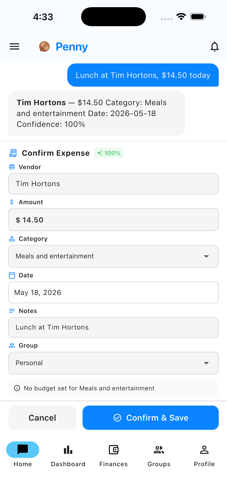
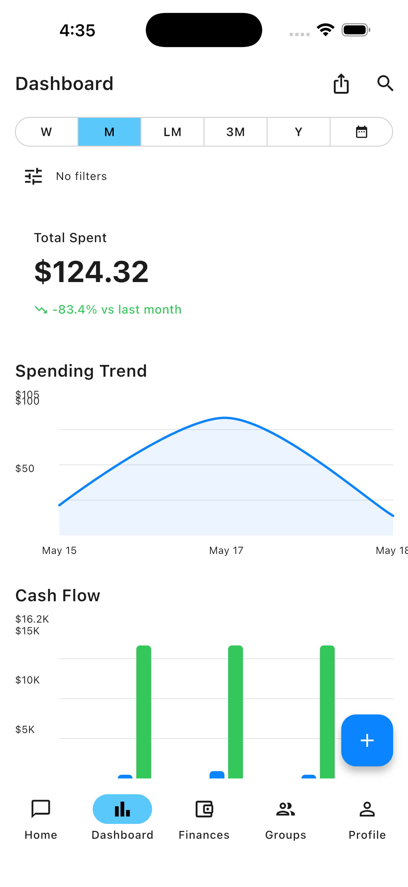
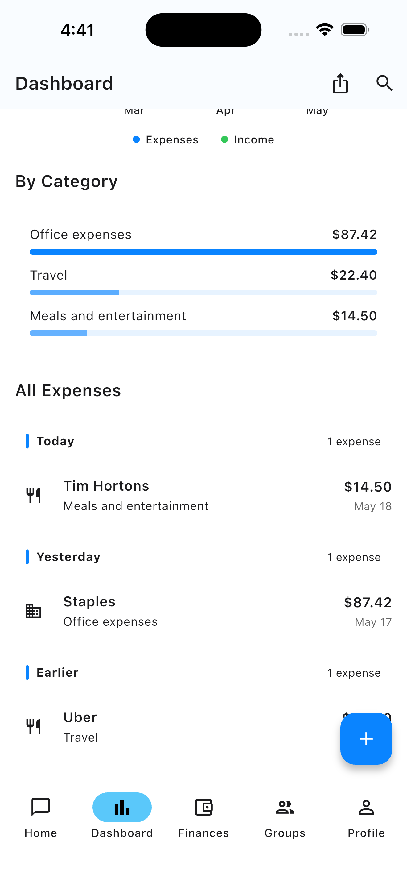
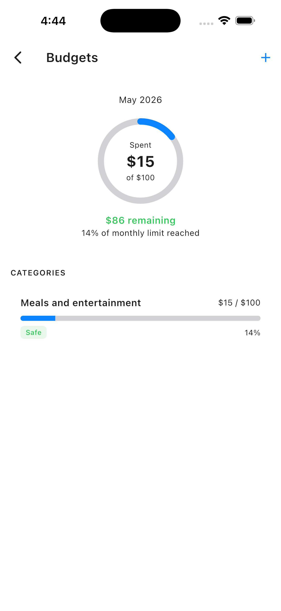
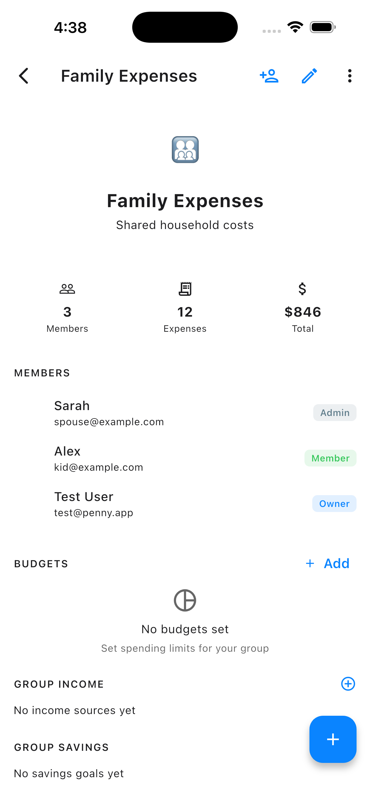
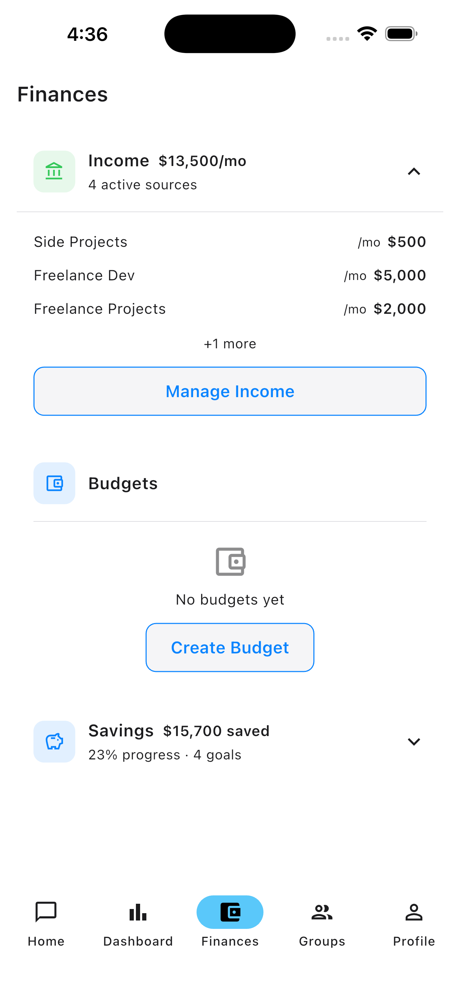
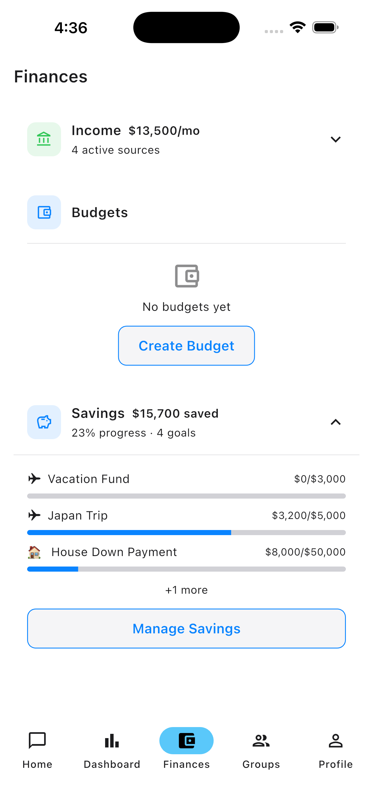

conversations/{id}/messages)StateNotifierProvider for the active thread; StreamProvider for history@riverpod
class Chat extends _$Chat {
Future<void> send(String text, {File? receipt}) async {
state = state.copyWith(status: Sending());
final r = await ref.read(aiRepositoryProvider)
.analyzeExpense(text: text, image: receipt);
state = state.copyWith(extracted: r);
}
}
StreamProvider on expenses.where(userId).orderBy(date)Stream<List<ExpenseModel>> personalExpenses(String userId) =>
_firestore.collection('expenses')
.where('userId', isEqualTo: userId)
.where('expenseType', isEqualTo: 'personal')
.orderBy('date', descending: true)
.snapshots()
.map((s) => s.docs.map(ExpenseModel.fromFirestore).toList());
Source of truth: src/lib/categories.ts; Dart mirrors the exact strings — written to Firestore as raw labels.
export const expenseCategories = [
"Advertising (Promotion, gift cards etc.)",
"Meals and entertainment", // ... 19 General
"Home Office - Electricity", // ... 9 Home Office
"Vehicle - Fuel (gasoline, propane, oil)", // ... 10 Vehicle
] as const;
budgets_personal / budgets_groupPOST /api/expenses and writes the notifications doc — client never decides "you went over"
Roles: owner → admin → member → viewer. Permissions denormalized into each groupMembers doc — rules branch on a single get().
match /groupMembers/{membershipId} {
allow get: if isAuthenticated() &&
(resource.data.userId == request.auth.uid ||
isGroupMember(resource.data.groupId));
// Server-only — created on group create or invite accept
allow create: if false;
allow update: if isGroupOwner(resource.data.groupId) ||
request.auth.uid == resource.data.userId;
}allow create: if false — only the API can mint memberships

data → domain → presentation@riverpod codegen — typed, zero runtime lookupsShellRoute for the 5-tab bottom navsrc/lib/types.ts, Dart mirror in data/models/git tag v*.*.*github.run_number + 100ios ship, android ship, repair_and_submitgit tag v2.3.5 && git push --tags
# ~90 min later: live on both stores
Shipping to TestFlight + Play Store on every v*.*.* tag.
Thank you · questions?